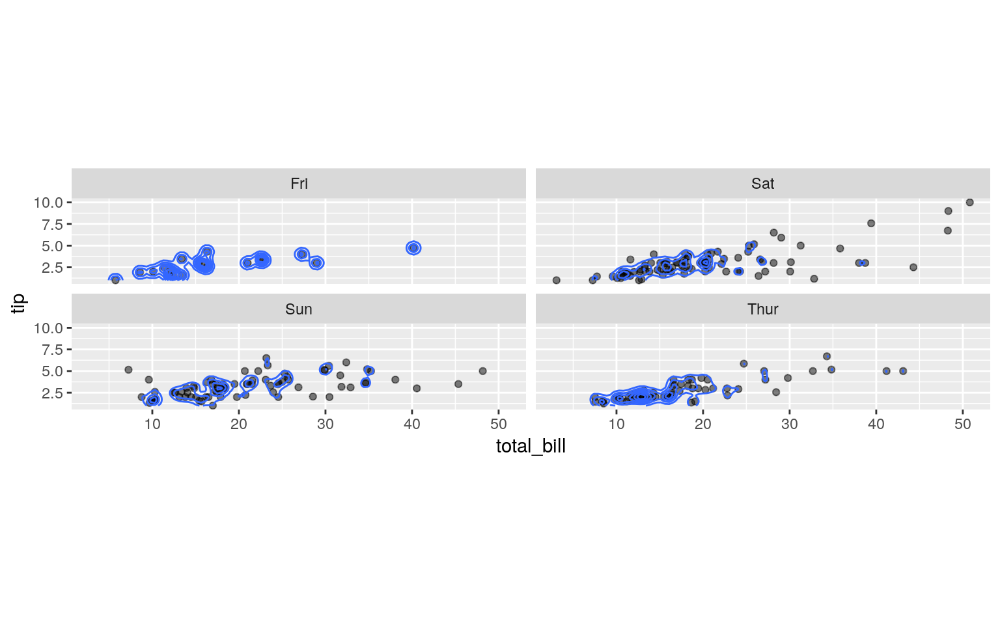
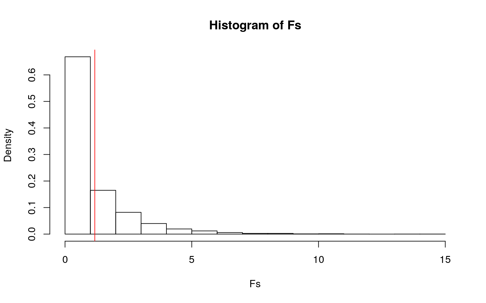
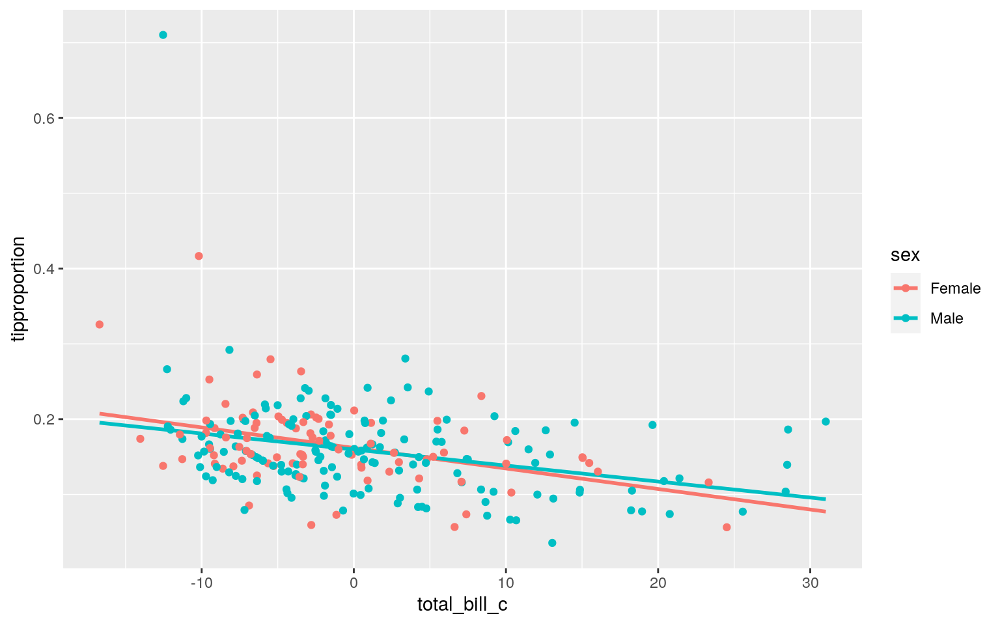
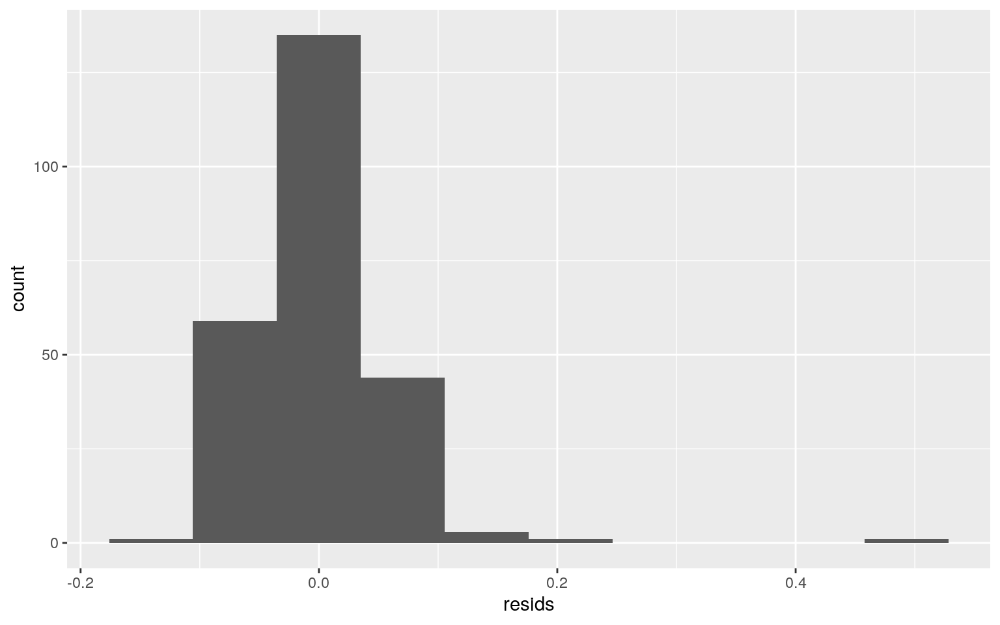
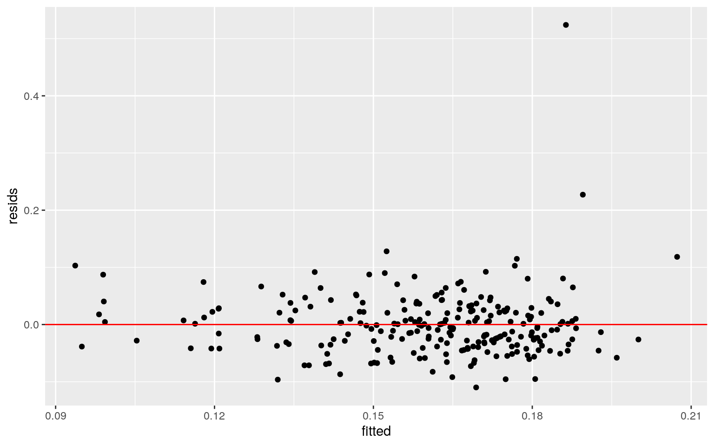
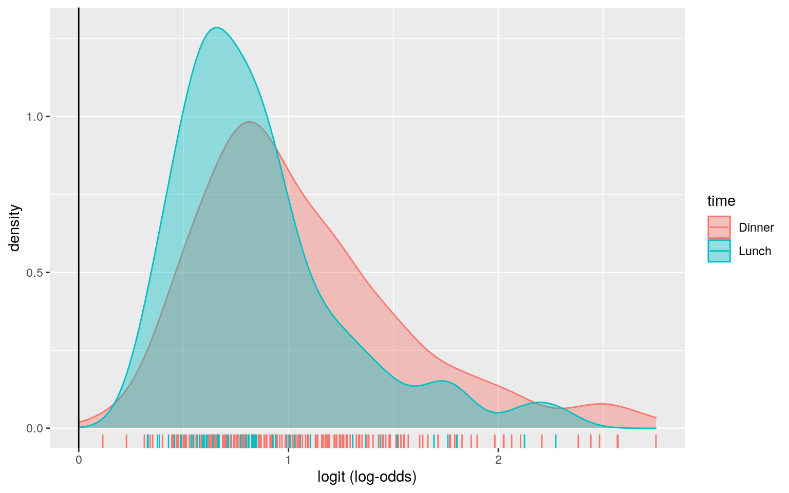
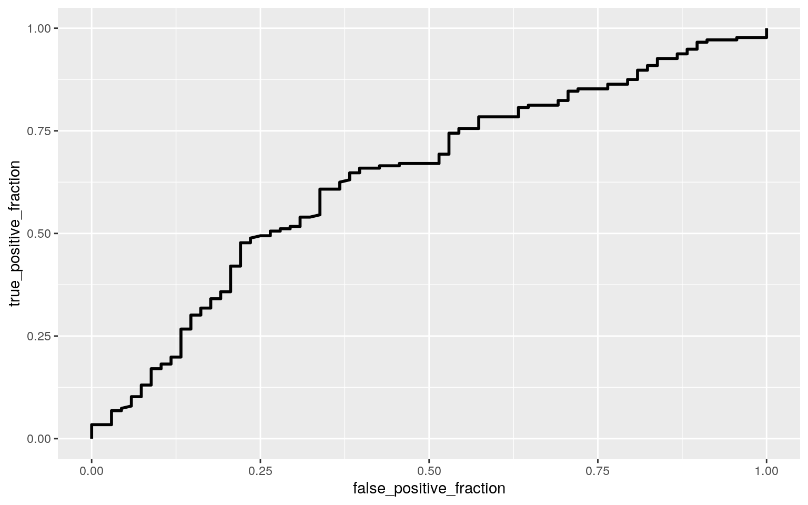
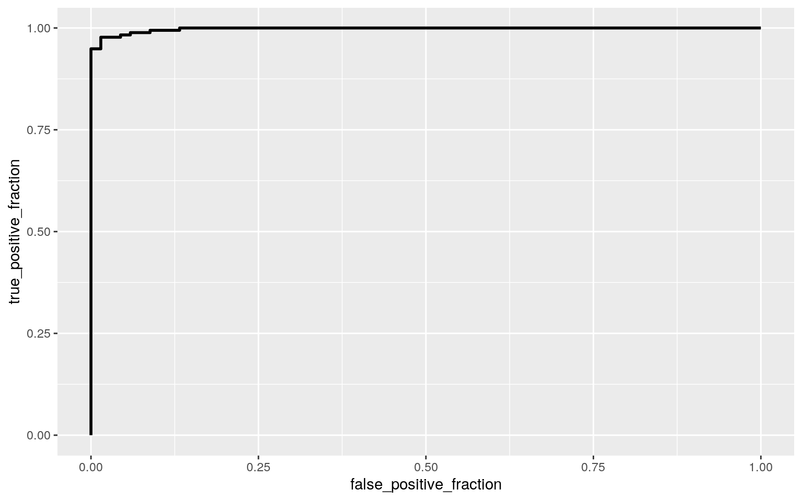

A knitted R Markdown document (preferably HTML) and the raw R Markdown file (as .Rmd) should both be submitted to Canvas by 11:59pm on the due date. These two documents will be graded jointly, so they must be consistent (i.e., don’t change the R Markdown file without also updating the knitted document). In the .Rmd file for Project 2, you can copy the first code-chunk into your project .Rmd file to get better formatting. Notice that you can adjust the opts_chunk$set(…) above to set certain parameters if necessary to make the knitting cleaner (you can globally set the size of all plots, etc). You can copy the set-up chunk in Project2.Rmd: I have gone ahead and set a few for you (such as disabling warnings and package-loading messges when knitting)!
Like before, I envision your written text forming something of a narrative structure around your code/output. All results presented must have corresponding code. Any answers/results/plots etc. given without the corresponding R code that generated the result will not be graded. Furthermore, all code contained in our project document should work properly. Please do not include any extraneous code or code which produces error messages. (Code which produces warnings is fine as long as you understand what the warnings mean.)
Find one dataset with at least 5 variables (ideally more!) that you want to use to build models/test hypotheses. At least one should be categorical (with 2-5 groups, ideally; definitely fewer than 10) and at least two should be numeric (taking on more than 10 distinct values). Ideally, at least of your variables will be binary (if not, you will have to create one by discretizing a numeric or collapsing levels of a categorical). You will need a minimum of 40 observations (at least 10 observations for every explanatory variable you have, ideally 20+ observations/variable).
It is perfectly fine to use either dataset (or the merged dataset, or a subset of your variables) from Project 1. However, I might encourage you to diversify things a bit and choose a different dataset to work with (particularly if the variables did not reveal interesting associations in Project 1 that you want to follow up with). The only requirement/restriction is that you may not use data from any examples we have done in class or lab. It would be a good idea to pick more cohesive data this time around (i.e., variables that you actually thing might have a relationship you would want to test). Think more along the lines of your Biostats project.
Again, you can use data from anywhere you want (see bottom for resources)! If you want a quick way to see whether a built-in (R) dataset has binary and/or character (i.e., categorical) variables, check out this list: https://vincentarelbundock.github.io/Rdatasets/datasets.html.
library(tidyverse)
library(mvtnorm)
library(ggExtra)
library(ggplot2)
tips <- read.csv("~/tips.csv")
tips <- tips %>% mutate(tipproportion=tip/total_bill)In this project, I will be using the “tips” dataset which describes the differences in tip amounts between male and females, controlling for smoking status, bill size, party size, day of the week, and time of day (ex: Dinner or Lunch). The variables describe the following: total_bill is the total price of the meal in dollars, tip is the size of the tip in dollars, sex described whether the tipper is male or female, smoker described whether the tipper is a smoker or nonsmoker, day describes the day of the week, time describes whether the meal was at lunch or dinner, and size describes the party size. Each variable has 244 total observations. I also created a new variable named “tipproportion” to analyze any differences in tip percentage.
# Visualizing multivariate plots of tip size and total bill for each day of the week
ggplot(tips, aes(x = total_bill, y = tip)) +
geom_point(alpha = .5) + geom_density_2d(h=2) + coord_fixed() + facet_wrap(~day)
# Formal test of multivariate normality assumption
library(rstatix)
group <- tips$day
DVs <- tips %>% select(total_bill,tip)
sapply(split(DVs,group), mshapiro_test)## Fri Sat Sun Thur
## statistic 0.8779989 0.8256297 0.9695895 0.8618771
## p.value 0.01981875 9.74093e-09 0.06475745 5.159345e-06From the graphs above, the data appears to meet the assumption of multivariate normality. Will perform MANOVA despite violating to further gauge any significance between the variables.
# Separating covariance matrices for each group to test assumption of homogeneity of within-group covariance matrices
lapply(split(DVs,group), cov)## $Fri
## total_bill tip
## total_bill 68.934158 6.534575
## tip 6.534575 1.039537
##
## $Sat
## total_bill tip
## total_bill 89.87834 10.880051
## tip 10.88005 2.660208
##
## $Sun
## total_bill tip
## total_bill 78.006376 5.472423
## tip 5.472423 1.524929
##
## $Thur
## total_bill tip
## total_bill 62.19168 7.945830
## tip 7.94583 1.538154There appears to be some difference between covariance matrices, will perform MANOVA despite a violation of this assumption.
# Running overall MANOVA
man1<-manova(cbind(total_bill,tip)~day, data=tips)
summary(man1)## Df Pillai approx F num Df den Df Pr(>F)
## day 3 0.037582 1.5321 6 480 0.1657
## Residuals 240After performing the overall MANOVA test, it appears that there is no significance (p=0.1657>0.05) between the day of the week and total bill/tip amount. Only one test is performed since there is no significant differences seen.
For this section, I will be performing a randomization test using an observed F-statistic to understand if there are any significant differences in tip percentage (tipproportion) between males and females. The null hypothesis is that males and females do not significantly differ in tip percentage. The alternate hypothesis is that males and females significantly differ in their tip percentage.
# One-Way ANOVA table to obtain F-statistic
summary(aov(tipproportion~sex,data=tips))## Df Sum Sq Mean Sq F value Pr(>F)
## sex 1 0.0044 0.004375 1.174 0.28
## Residuals 242 0.9020 0.003727#Performing Randomization Test using observed F-statistic
obs_F <- 1.174
# Replicating 5000 times
Fs <- replicate(5000,{
#randomly permute response variable (tipproportion)
new <- tips%>%mutate(tipproportion=sample(tipproportion))
#computing the SSW and SSB by hand
SSW <- new %>% group_by(sex) %>% summarize(SSW=sum((tipproportion-mean(tipproportion))^2)) %>%
summarize(sum(SSW)) %>% pull
SSB <- new %>% mutate(mean=mean(tipproportion)) %>% group_by(sex) %>%
mutate(groupmean=mean(tipproportion)) %>% summarize(SSB=sum((mean-groupmean)^2)) %>%
summarize(sum(SSB))%>%pull
# Computing F-statistic using degrees of freedom
(SSB/1)/(SSW/242)
})
# Plotting distribution of F-statistic under null hypothesis
hist(Fs, prob=T)
abline(v = obs_F, col="red",add=T)
# Finding p-value
mean(Fs>obs_F)## [1] 0.2904From the randomization test and plot above, the observed F-statistic for tip percentage (1.174) falls within the normal distribution for F-statistics under the null hypothesis. This means that I fail to reject the null hypothesis, and it can be assumed that there are no significant differences in tip percentage between males and females (p=0.2928>0.05)
# Mean-centering numeric variables
tips$total_bill_c <- tips$total_bill-mean(tips$total_bill)
tips$size_c <- tips$size-mean(tips$size)
# Multiple regression predicting tip percentage from party size, total bill, and the interaction between party size and total bill
fit <- lm(tipproportion ~ total_bill_c +sex + total_bill_c:sex, data=tips)
summary(fit)##
## Call:
## lm(formula = tipproportion ~ total_bill_c + sex +
total_bill_c:sex,
## data = tips)
##
## Residuals:
## Min 1Q Median 3Q Max
## -0.10995 -0.03434 -0.00544 0.02480 0.52399
##
## Coefficients:
## Estimate Std. Error t value Pr(>|t|)
## (Intercept) 0.1617773 0.0063366 25.531 < 2e-16 ***
## total_bill_c -0.0027260 0.0007776 -3.506 0.000544 ***
## sexMale -0.0020888 0.0078505 -0.266 0.790414
## total_bill_c:sexMale 0.0005990 0.0009246 0.648 0.517692
## ---
## Signif. codes: 0 '***' 0.001 '**' 0.01 '*' 0.05 '.' 0.1
' ' 1
##
## Residual standard error: 0.05776 on 240 degrees of
freedom
## Multiple R-squared: 0.1166, Adjusted R-squared: 0.1056
## F-statistic: 10.56 on 3 and 240 DF, p-value: 1.502e-06- Interpret the coefficient estimates (do not discuss significance) (10)Intercept: Predicted tip percentage for females with an average total bill is 0.162 (16.2%).
total_bill_c: In females, every one dollar increase in total bill on average leads to a decrease of 0.0027 (0.27%) in tip percentage.
sexMale: In an average total bill, tip percentage is 0.0021 (0.21%) lower in males compared to females
total_bill_c:sexMale: The slope for tip percentage on total bill is 0.0006 greater for males compared to females.
- Plot the regression using `ggplot()` using geom_smooth(method="lm"). If your interaction is numeric by numeric, refer to code in the slides to make the plot or check out the `interactions` package, which makes this easier. If you have 3 or more predictors, just chose two of them to plot for convenience. (10)ggplot(tips, aes(total_bill_c,tipproportion, color = sex)) + geom_smooth(method = "lm", se = F, fullrange = T) + geom_point() 
- What proportion of the variation in the outcome does your model explain? (4)
- Check assumptions of linearity, normality, and homoskedasticity either graphically or using a hypothesis test (5)0.1166 (R^2) of the variation in the outcome is explained by the model.
# Checking assumptions of linearity, normality, and homoskedsaticity
resids<-fit$residuals
fitted <- fit$fitted.values
ggplot()+geom_histogram(aes(resids),bins=10)
ggplot()+geom_point(aes(fitted, resids)) +geom_hline(yintercept=0, color = 'red') Variance appears to be normal and constant. Relationship appears to be linear. Assumptions of linearity, normality, and homoskedstadicity are met.
- Regardless, recompute regression results with robust standard errors via `coeftest(..., vcov=vcovHC(...))`. Discuss significance of results, including any changes from before/after robust SEs if applicable. (10)library(sandwich)
library(lmtest)
#Checking for homoskedaticity
bptest(fit)##
## studentized Breusch-Pagan test
##
## data: fit
## BP = 2.9273, df = 3, p-value = 0.403#Uncorrected SE
summary(fit)$coef[,1:2]## Estimate Std. Error
## (Intercept) 0.1617773080 0.0063365804
## total_bill_c -0.0027260282 0.0007776280
## sexMale -0.0020887771 0.0078504808
## total_bill_c:sexMale 0.0005989935 0.0009245666#Corrected SE
coeftest(fit, vcov = vcovHC(fit))[,1:2]## Estimate Std. Error
## (Intercept) 0.1617773080 0.0050136593
## total_bill_c -0.0027260282 0.0006987534
## sexMale -0.0020887771 0.0073142524
## total_bill_c:sexMale 0.0005989935 0.0009966547After running the Breusch-Pagan test, the p value of 0.403 confirms that the assumption of homoskedasticity was not violated. Recomputing regression results using robust standard errors resulted in slightly smaller standard errors for the two predictor variables and intercept; and a slightly larger standard error for the interaction between predictors.
# Original regression model SE
summary(fit)$coef[,1:2]## Estimate Std. Error
## (Intercept) 0.1617773080 0.0063365804
## total_bill_c -0.0027260282 0.0007776280
## sexMale -0.0020887771 0.0078504808
## total_bill_c:sexMale 0.0005989935 0.0009245666boot_dat<- sample_frac(tips, replace=T)
# Resampling data with replacement and repeating 5000 times
samp_distn<-replicate(5000, {
boot_dat <- sample_frac(tips, replace=T)
bootfit <- lm(tipproportion ~ total_bill_c +sex + total_bill_c:sex, data=boot_dat) #fit model on bootstrap sample
coef(bootfit) #save coefs
})
# Estimated SEs
samp_distn %>% t %>% as.data.frame %>% summarize_all(sd)## (Intercept) total_bill_c sexMale total_bill_c:sexMale
## 1 0.004948556 0.0006982308 0.00717921 0.0009828049bootfit <- lm(tipproportion ~ total_bill_c +sex + total_bill_c:sex, data=boot_dat)Running the original regression model with bootstrap SEs resulted in slightly smaller standard errors for the two predictor variables and intercept; and a slightly larger standard error for the interaction between predictors. These changes to the standard errors were not as drastic as when running the regression using robust standard errors.
summary(bootfit)##
## Call:
## lm(formula = tipproportion ~ total_bill_c + sex +
total_bill_c:sex,
## data = boot_dat)
##
## Residuals:
## Min 1Q Median 3Q Max
## -0.10747 -0.03697 -0.01052 0.02598 0.51693
##
## Coefficients:
## Estimate Std. Error t value Pr(>|t|)
## (Intercept) 0.1589726 0.0070657 22.499 < 2e-16 ***
## total_bill_c -0.0028411 0.0008179 -3.474 0.000609 ***
## sexMale 0.0046980 0.0089132 0.527 0.598623
## total_bill_c:sexMale 0.0004687 0.0009893 0.474 0.636067
## ---
## Signif. codes: 0 '***' 0.001 '**' 0.01 '*' 0.05 '.' 0.1
' ' 1
##
## Residual standard error: 0.06598 on 240 degrees of
freedom
## Multiple R-squared: 0.1129, Adjusted R-squared: 0.1019
## F-statistic: 10.19 on 3 and 240 DF, p-value: 2.439e-06summary(fit)##
## Call:
## lm(formula = tipproportion ~ total_bill_c + sex +
total_bill_c:sex,
## data = tips)
##
## Residuals:
## Min 1Q Median 3Q Max
## -0.10995 -0.03434 -0.00544 0.02480 0.52399
##
## Coefficients:
## Estimate Std. Error t value Pr(>|t|)
## (Intercept) 0.1617773 0.0063366 25.531 < 2e-16 ***
## total_bill_c -0.0027260 0.0007776 -3.506 0.000544 ***
## sexMale -0.0020888 0.0078505 -0.266 0.790414
## total_bill_c:sexMale 0.0005990 0.0009246 0.648 0.517692
## ---
## Signif. codes: 0 '***' 0.001 '**' 0.01 '*' 0.05 '.' 0.1
' ' 1
##
## Residual standard error: 0.05776 on 240 degrees of
freedom
## Multiple R-squared: 0.1166, Adjusted R-squared: 0.1056
## F-statistic: 10.56 on 3 and 240 DF, p-value: 1.502e-06Running the original regression model with bootstrap SEs resulted in a slightly smaller p-value for total_bill_c and the interaction total_bill_c:sexMale. Bootstrap SEs resulted in a slightly larger p-value for sexMale. There was no effect on the p-value of the intercept.
# Centering size variable, total_bill was previously centered
tips$size_c <- tips$size-mean(tips$size)
#Logistic regression
tipslog<-tips%>%mutate(y=ifelse(time=="Dinner",1,0))
fitlog <- glm(y~total_bill_c+size_c, data=tipslog,family="binomial")
coeftest(fitlog)##
## z test of coefficients:
##
## Estimate Std. Error z value Pr(>|z|)
## (Intercept) 1.003452 0.149888 6.6947 2.161e-11 ***
## total_bill_c 0.056901 0.024099 2.3611 0.01822 *
## size_c -0.039702 0.206525 -0.1922 0.84756
## ---
## Signif. codes: 0 '***' 0.001 '**' 0.01 '*' 0.05 '.' 0.1
' ' 1# Exponentiating coefficients for interpretation
exp(coef(fitlog))## (Intercept) total_bill_c size_c
## 2.7276826 1.0585513 0.9610763- Interpret coefficient estimates in context (10)Intercept: For an average total bill and average party size, the odds of a dinnertime meal are 2.73.
total_bill_c: Controlling for party size, for every 1 dollar increase in total bill size on average, odds of dinner time meal increase by a factor of 1.059.
size_c: Controlling for total bill size, for every 1 person increase in party size on average, odds of dinnertime meal increase by 0.96.
- Report a confusion matrix for your logistic regression (5)prob<-predict(fitlog,type="response")
table(predict=as.numeric(prob>.5),truth=tipslog$y)%>%addmargins## truth
## predict 0 1 Sum
## 1 68 176 244
## Sum 68 176 244- Compute and discuss the Accuracy, Sensitivity (TPR), Specificity (TNR), Precision (PPV), and AUC of your model (5)# Accuracy computation
176/244## [1] 0.7213115#Sensitivity computation
176/176## [1] 1#Specificity computation
0/68## [1] 0#Precision computation
176/244## [1] 0.7213115#AUC computation
library(plotROC)
ROCplot<-ggplot(tipslog)+geom_roc(aes(d=y,m=total_bill_c+size_c), n.cuts=0)
calc_auc(ROCplot)## PANEL group AUC
## 1 1 -1 0.6385361My model did not predict any negative (Lunchtime) cases. All cases were predicted positive (Dinnertime) yielding a sensitivity of 1 and a specificity of 0. The AUC for my ROC plot is 0.639 which signifies that my test has poor classifier performance.
- Using ggplot, make a density plot of the log-odds (logit) colored/grouped by your binary outcome variable (5)
- Generate an ROC curve (plot) and calculate AUC (either manually or with a package); interpret (5)#Generating log-odds for data
tipslog$logit<-predict(fitlog,type="link")
tipslog%>%ggplot()+geom_density(aes(logit,color=time,fill=time), alpha=.4)+geom_vline(xintercept=0)+xlab("logit (log-odds)")+
geom_rug(aes(logit,color=time))
#Generating ROC plot
ROCplot<-ggplot(tipslog)+geom_roc(aes(d=y,m=total_bill_c+size_c), n.cuts=0)
ROCplot
calc_auc(ROCplot)## PANEL group AUC
## 1 1 -1 0.6385361The density plot confirms that my model predicts every case to be positive (Dinnertime). The ROC plot has an AUC of 0.639 which is considered poor. This is likely due to the inability of my model to predict negative (lunchtime) cases. To make the model more accurate, I would change the probability cutoff to increase the models specificity.
#Centering the rest of the numeric variables
tipslog$tip_c <- tipslog$tip-mean(tipslog$tip)
tipslog$tipproportion_c <- tipslog$tipproportion-mean(tipslog$tipproportion)
#Logistic regression
fitlogtotal <- glm(y~total_bill_c+size_c+sex+tipproportion_c+tip_c+smoker+day, data=tipslog,family="binomial")- Fit model, compute in-sample classification diagnostics (Accuracy, Sensitivity, Specificity, Precision, AUC), and interpret (5)#Confusion matrix
probtotal<-predict(fitlogtotal,type="response")
table(predict=as.numeric(probtotal>.5),truth=tipslog$y)%>%addmargins## truth
## predict 0 1 Sum
## 0 65 4 69
## 1 3 172 175
## Sum 68 176 244# Accuracy computation
(65+172)/244## [1] 0.9713115#Sensitivity computation
172/176## [1] 0.9772727#Specificity computation
65/68## [1] 0.9558824#Precision computation
172/175## [1] 0.9828571#AUC computation
library(plotROC)
ROCplot2<-ggplot(tipslog)+geom_roc(aes(d=y,m=probtotal), n.cuts=0)
ROCplot2
calc_auc(ROCplot2)## PANEL group AUC
## 1 1 -1 0.997744After performing a logistic regression using all the variables in my dataset, the model yielded a very high accuracy, sensitivity, specificity, and precision. As a result, the AUC from the ROC plot came out to be 0.998 which is excellent.
- Perform 10-fold (or repeated random sub-sampling) CV with the same model and report average out-of-sample classification diagnostics (Accuracy, Sensitivity, Specificity, Precision, and AUC); interpret AUC and compare with the in-sample metrics (10)
- Perform LASSO on the same model/variables. Choose lambda to give the simplest model whose accuracy is near that of the best (i.e., `lambda.1se`). Discuss which variables are retained. (5)
- Perform 10-fold CV using only the variables lasso selected: compare model's out-of-sample AUC to that of your logistic regressions above (5)class_diag<-function(probs,truth){
tab<-table(factor(probs>.5,levels=c("FALSE","TRUE")),truth)
acc=sum(diag(tab))/sum(tab)
sens=tab[2,2]/colSums(tab)[2]
spec=tab[1,1]/colSums(tab)[1]
ppv=tab[2,2]/rowSums(tab)[2]
if(is.numeric(truth)==FALSE & is.logical(truth)==FALSE) truth<-as.numeric(truth)-1
#CALCULATE EXACT AUC
ord<-order(probs, decreasing=TRUE)
probs <- probs[ord]; truth <- truth[ord]
TPR=cumsum(truth)/max(1,sum(truth))
FPR=cumsum(!truth)/max(1,sum(!truth))
dup<-c(probs[-1]>=probs[-length(probs)], FALSE)
TPR<-c(0,TPR[!dup],1); FPR<-c(0,FPR[!dup],1)
n <- length(TPR)
auc<- sum( ((TPR[-1]+TPR[-n])/2) * (FPR[-1]-FPR[-n]) )
data.frame(acc,sens,spec,ppv,auc)
}
# 10-fold CV
set.seed(1234)
k=10
folddata <- tipslog[sample(nrow(tipslog)),]
folds <-cut(seq(1:nrow(tipslog)),breaks=k,labels=F)
diags<-NULL
for(i in 1:k){
## Create training and test sets
train<-folddata[folds!=i,]
test<-folddata[folds==i,]
truth<-test$y ## Truth labels for fold i
## Train model on training set (all but fold i)
tipsfit <- glm(y~total_bill_c+size_c+sex+tipproportion_c+tip_c+smoker+day, data=train,family="binomial")
## Test model on test set (fold i)
prob<-predict(tipsfit,newdata = test,type="response")
## Get diagnostics for fold i
diags<-rbind(diags,class_diag(prob,truth))
}
summarize_all(diags,mean)## acc sens spec ppv auc
## 1 0.9508333 0.9643756 0.8978571 0.9684611 0.9953351The new AUC when predicting out of sample is 0.995, a small decrease from the in-smaple prediction done above.
#LASSO
#install.packages("glmnet")
library(glmnet)
set.seed(1234)
#Lasso on data
y <- as.matrix(tipslog$y)
x<-model.matrix(tipsfit, data=tipslog)[,-1]
head(x)## total_bill_c size_c sexMale tipproportion_c tip_c
smokerYes daySat daySun dayThur
## 1 -2.795943 -0.5696721 0 -0.1013558483 -1.9882787 0 0 1
0
## 2 -9.445943 0.4303279 1 -0.0002609956 -1.3382787 0 0 1 0
## 3 1.224057 0.4303279 1 0.0057847576 0.5017213 0 0 1 0
## 4 3.894057 -0.5696721 1 -0.0210221763 0.3117213 0 0 1 0
## 5 4.804057 1.4303279 0 -0.0139949363 0.6117213 0 0 1 0
## 6 5.504057 1.4303279 1 0.0254370387 1.7117213 0 0 1 0#Standardize variable
x<-scale(x)
cv<-cv.glmnet(x,y,family="binomial")
lasso<-glmnet(x,y,family="binomial",lambda=cv$lambda.1se)
coef(lasso)## 10 x 1 sparse Matrix of class "dgCMatrix"
## s0
## (Intercept) 1.68897957
## total_bill_c 0.03104262
## size_c .
## sexMale .
## tipproportion_c .
## tip_c .
## smokerYes .
## daySat 1.11947870
## daySun 1.03226461
## dayThur -1.78939408*The only variables retained after performing LASSO is total bill size and the day of the week.
# 10-fold CV with retained variables
set.seed(1234)
k=10
folddata <- tipslog[sample(nrow(tipslog)),]
folds <-cut(seq(1:nrow(tipslog)),breaks=k,labels=F)
diags<-NULL
for(i in 1:k){
## Create training and test sets
train<-folddata[folds!=i,]
test<-folddata[folds==i,]
truth<-test$y ## Truth labels for fold i
## Train model on training set (all but fold i)
tipsfit <- glm(y~total_bill_c+day, data=train,family="binomial")
## Test model on test set (fold i)
prob<-predict(tipsfit,newdata = test,type="response")
## Get diagnostics for fold i
diags<-rbind(diags,class_diag(prob,truth))
}
summarize_all(diags,mean)## acc sens spec ppv auc
## 1 0.9591667 0.9755212 0.8978571 0.9696651 0.998107After performing the 10-fold CV using only the variables retained by LASSO, the new AUC is 0.998 which is both better than the previous out-of-sample prediction and the in-sample prediction.
You can choose ANY datasets you want that meet the above criteria for variables and observations. You can make it as serious as you want, or not, but keep in mind that you will be incorporating this project into a portfolio webpage for your final in this course, so choose something that really reflects who you are, or something that you feel will advance you in the direction you hope to move career-wise, or something that you think is really neat, or whatever. On the flip side, regardless of what you pick, you will be performing all the same tasks, so it doesn’t end up being that big of a deal.
If you are totally clueless and have no direction at all, log into the server and type
data(package = .packages(all.available = TRUE))This will print out a list of ALL datasets in ALL packages installed on the server (a ton)! Scroll until your eyes bleed! Actually, do not scroll that much… To start with something more manageable, just run the command on your own computer, or just run data() to bring up the datasets in your current environment. To read more about a dataset, do ?packagename::datasetname.
If it is easier for you, and in case you don’t have many packages installed, a list of R datasets from a few common packages (also downloadable in CSV format) is given at the following website: https://vincentarelbundock.github.io/Rdatasets/datasets.html.
A good package to download for fun/relevant data is fivethiryeight.
Run install.packages("fivethirtyeight"), load the packages with library(fivethirtyeight), run data(), and then scroll down to view the datasets. Here is an online list of all 127 datasets (with links to the 538 articles). Lots of sports, politics, current events, etc.
If you have already started to specialize (e.g., ecology, epidemiology) you might look at discipline-specific R packages (vegan, epi, respectively). We will be using some tools from these packages later in the course, but they come with lots of data too, which you can explore according to the directions above
However, you emphatically DO NOT have to use datasets available via R packages! In fact, I would much prefer it if you found the data from completely separate sources and brought them together (a much more realistic experience in the real world)! You can even reuse data from your SDS328M project, provided it shares a variable in common with other data which allows you to merge the two together (e.g., if you still had the timestamp, you could look up the weather that day: https://www.wunderground.com/history/). If you work in a research lab or have access to old data, you could potentially merge it with new data from your lab!
Here is a curated list of interesting datasets (read-only spreadsheet format): https://docs.google.com/spreadsheets/d/1wZhPLMCHKJvwOkP4juclhjFgqIY8fQFMemwKL2c64vk/edit
Here is another great compilation of datasets: https://github.com/rfordatascience/tidytuesday
Here is the UCI Machine Learning Repository: https://archive.ics.uci.edu/ml/index.php
Here is another good general place to look: https://www.kaggle.com/datasets
To help narrow your search down or to see interesting variable ideas, check out https://www.tylervigen.com/spurious-correlations. This is the spurious correlations website, and it is fun, but if you look at the bottom of each plot you will see sources for the data. This is a good place to find very general data (or at least get a sense of where you can scrape data together from)!
If you are interested in medical data, check out www.countyhealthrankings.org
If you are interested in scraping UT data, they make loads of data public (e.g., beyond just professor CVs and syllabi). Check out all the data that is available in the statistical handbooks: https://reports.utexas.edu/statistical-handbook
Data.gov 186,000+ datasets!
Social Explorer is a nice interface to Census and American Community Survey data (more user-friendly than the government sites). May need to sign up for a free trial.
U.S. Bureau of Labor Statistics
Gapminder, data about the world.
…